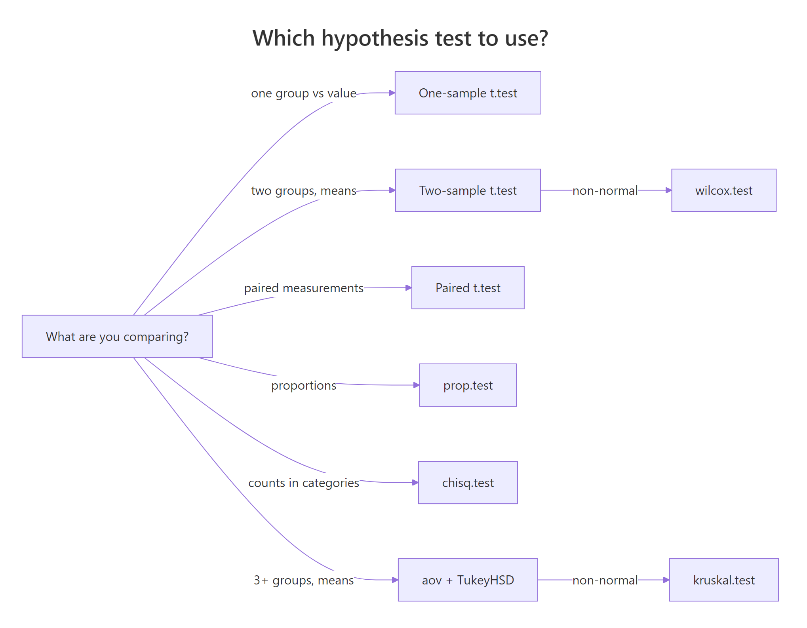

Hypothesis Testing Exercises in R: 15 Practice Problems with Solutions
These 15 hypothesis testing exercises in R take you from a single-group t-test to ANOVA and non-parametric alternatives, each with a scaffold, a hint, and a collapsible reveal so you can check your answer right after writing it. Every problem uses built-in R datasets, so you can run the code without loading a single file.
How does every hypothesis test in R follow the same pattern?
Every hypothesis test in R follows the same four steps: state the null hypothesis, pick the test that matches your data, run it with one line of code, and read the p-value against your significance level. The fastest way to lock the pattern in is to see it once end-to-end on a familiar dataset, then solve the same problem yourself. The payoff block below does exactly that on mtcars.
The p-value is 0.93, far above the usual 0.05 cutoff, so the data gives no reason to reject the claim that the average mpg equals 20. The 95% confidence interval [17.92, 22.26] contains 20, which is the same conclusion in a different format. Every single-group test you will meet in this post reads exactly like this.
You do not have to stare at the whole printout, just pull out the two numbers that matter.
Knowing how to pull out p.value and conf.int is what makes t.test() composable. You can drop those numbers into a report, a dplyr summary, or a larger simulation without ever copy-pasting from the console.
*.test() function in R returns a list. The list always carries p.value, statistic, and usually conf.int and estimate. Once you learn the shape, every test feels like the same tool with a different name.Try it: Run a one-sample t-test on iris$Sepal.Length against the null value mu = 5.8. Save the result to ex1_test and print its p-value only. Decide at alpha = 0.05 whether you reject the null.
Click to reveal solution
Explanation: The sample mean 5.843 is close to 5.8, so the t-statistic is small and the p-value 0.071 sits above 0.05. We do not reject H0, the population mean could plausibly be 5.8.
How do you run a one-sample t-test in R?
A one-sample t-test asks whether a sample's mean matches a fixed target. The target is the null value you pass as mu. If you have a directional hunch, say mean is greater than the target, swap the default two-sided test for alternative = "greater", which tests H1: mu > target. One-sided tests deliver smaller p-values when the direction matches, but they are only honest if you committed to the direction before looking at the data.
The one-sided p-value 0.032 falls below 0.05, so the data supports the claim that the long-run mean temperature exceeds 76°F. Notice the confidence interval has Inf as its upper limit, that is the trade-off for a one-sided test.
Try it: Run a one-sided t-test on ChickWeight$weight with mu = 120 and alternative = "greater". Store the result in ex2_test and print the p-value.
Click to reveal solution
Explanation: The sample mean 121.8 narrowly exceeds 120, but with 578 observations even a small lift becomes statistically significant, the one-sided p-value lands at 0.030.
How do you compare means across two independent groups?
When you want to compare the means of two unrelated groups, the go-to test is the two-sample t-test. R's t.test() accepts a formula outcome ~ group plus the data frame, which is cleaner than passing two vectors. Before reading the p-value, decide whether the two groups share a common variance, because that choice changes which version of the t-test you run.
The p-value 0.067 is above 0.05, so there is no strong evidence the two groups have different variances. You could assume equal variances and run a pooled t-test, but Welch's t-test (the R default) is safer when you are unsure.
The p-value 0.0014 is small, and the 95% CI for the mean difference does not cross zero, so manual cars have significantly higher mpg than automatics in this dataset. The negative interval just means group 0 (auto) minus group 1 (manual) is negative.
t.test() defaults to Welch's test, not the classical pooled t-test. Welch's allows unequal variances and gives you non-integer degrees of freedom, that 18.332 is not a bug. To force the pooled version, set var.equal = TRUE, but only do so when var.test() backs you up.Try it: Run a Welch two-sample t-test on ToothGrowth$len by supp. Save to ex3_test. Which supplement gives longer teeth on average?
Click to reveal solution
Explanation: OJ guinea pigs grow slightly longer teeth on average, but p = 0.061 sits just above 0.05. At the standard cutoff the difference is not significant, though the effect size is large enough to be of practical interest.
Try it: Compare Sepal.Width between setosa and versicolor in iris. First run var.test(), then choose whether to set var.equal = TRUE or not, and run t.test().
Click to reveal solution
Explanation: Variances look comparable (p = 0.26), so the pooled t-test is justified. The pooled t-test returns a tiny p-value, setosa and versicolor differ strongly on sepal width.
How do you test paired samples in R?
Paired samples occur when each observation in one group has a natural partner in the other, for example before-and-after measurements on the same person. Treating paired data as independent inflates the standard error and hides real effects. The fix is one extra argument: paired = TRUE inside t.test().
The paired test reports p = 0.003, strong evidence the two drugs differ. If you re-run without paired = TRUE, you would get p = 0.079, a false miss caused by ignoring the pairing.
extra[group==2] - extra[group==1] per subject and tests whether that mean difference is zero. If you already have the differences in hand, t.test(diffs, mu = 0) gives the same answer.Try it: Run the same sleep test twice, once with paired = TRUE and once without, and compare the p-values.
Click to reveal solution
Explanation: Pairing removes person-to-person variability, leaving only within-subject drug effects. That lowers the standard error, which raises the absolute t-statistic and crushes the p-value.
Try it: Simulate weight before and after a diet: before <- rnorm(30, 80, 10) and after <- before - rnorm(30, 2, 1). Test whether the mean difference is zero.
Click to reveal solution
Explanation: By construction after is about 2 kg lighter than before with tiny noise, so the paired t-test sees a near-deterministic drop and rejects H0 decisively.
How do you test proportions in R?
When your outcome is a count of successes out of a total, prop.test() is the one-line answer. It takes two arguments in the single-proportion case: the number of successes and the total sample size. You pass the null value with p =, and R applies a continuity correction by default.
The p-value 0.33 is well above 0.05, and the 95% CI [0.26, 0.45] contains 0.30, so you cannot reject the null that the true proportion is 0.30.
prop.test(0.35, 1) is a silent logic error. The function expects raw counts so it can compute standard errors correctly.Try it: Test whether 58 successes out of 100 is significantly different from p = 0.5.
Click to reveal solution
Explanation: 58/100 is three successes above the null of 50/100. With only 100 trials that is within the range of chance variation, so the p-value stays above 0.05 and you do not reject H0.
Try it: Campaign A gets 120 conversions out of 2000 visitors, campaign B gets 180 out of 2500. Use a two-proportion test to decide whether the conversion rates differ.
Click to reveal solution
Explanation: Campaign B converts at 7.2% vs A's 6.0%. With these sample sizes the p-value lands right on the edge of significance, real-world you would want more data before calling a winner.
How do you run a chi-square test in R?
Chi-square tests work on counts, not means. They come in two common flavours: goodness-of-fit, which checks whether observed counts match expected proportions for one categorical variable, and test of independence, which checks whether two categorical variables are associated. R handles both with chisq.test(), the difference is whether you pass one vector plus p = (goodness) or a contingency table (independence).
The p-value 0.50 is nowhere near significant, so the die looks fair. The observed counts bounce around the expected 10 per face, which is exactly what chance variation produces.
The p-value is effectively zero, hair colour and eye colour are strongly associated in this sample, which matches human genetics intuition.
fisher.test(), which gives exact p-values without the large-sample approximation.Try it: A coin is flipped 200 times and lands heads 115 times. Test whether the coin is fair.
Click to reveal solution
Explanation: 115 heads out of 200 is 0.575, far enough from 0.5 with this sample size to give a p-value of 0.036. At alpha = 0.05 we reject the null that the coin is fair.
Try it: Use the Titanic dataset to test whether survival depends on passenger class. Collapse over sex and age first to build a 2-way table.
Click to reveal solution
Explanation: The p-value is astronomically small. First-class passengers survived at much higher rates than third-class or crew, so class and survival are not independent.
How do you run a one-way ANOVA in R?
When you want to compare the means of three or more groups, running many t-tests inflates the false positive rate. One-way ANOVA tests a single hypothesis across all groups: "every group has the same population mean." R's aov() accepts a formula outcome ~ group, and summary() prints the ANOVA table with the F-statistic and its p-value.
The F-statistic of 119.3 with p < 2e-16 tells you at least one species differs from the others on sepal length. What ANOVA cannot tell you is which pair differs, that is the job of a post-hoc test.
All three pairwise comparisons sit well below 0.05, so every species differs from every other on sepal length. The diff column gives the direction, virginica has the longest sepals, setosa the shortest.
Try it: Run a one-way ANOVA on the PlantGrowth dataset. Are there differences in weight across the three group levels (ctrl, trt1, trt2)?
Click to reveal solution
Explanation: F = 4.85 with p = 0.016 says at least one treatment differs from the others at alpha = 0.05. You do not yet know which, that is what the next exercise cracks open.
Try it: Run TukeyHSD() on ex11_aov. Which pair of groups differs significantly?
Click to reveal solution
Explanation: Only the trt2-trt1 comparison crosses the 0.05 line. Neither treatment on its own differs from the control, but trt2 beats trt1, which explains where the ANOVA signal came from.
Practice Exercises
These three capstone exercises combine concepts from across the post. No scaffolds, just the problem and a hint, then your turn to put the pieces together.
Exercise 13: Non-parametric alternative to the t-test
The Wilcoxon rank-sum test (also called Mann-Whitney U) replaces the two-sample t-test when the data are not normal. Use it on mtcars$mpg split by am, then compare the p-value to the t-test result you saw earlier.
Click to reveal solution
Explanation: The Wilcoxon p-value 0.0019 leads to the same conclusion as the t-test (p = 0.0014) from the two-group section, manual cars are more fuel-efficient. When both tests agree you have a robust finding, the signal is not an artefact of a normality assumption.
Exercise 14: Kruskal-Wallis as a non-parametric ANOVA
The Kruskal-Wallis test generalises Wilcoxon to three or more groups. Run it on PlantGrowth and compare the p-value to the ANOVA you ran in Exercise 11.
Click to reveal solution
Explanation: Kruskal-Wallis returns p = 0.018, close to the ANOVA's p = 0.016. When parametric and non-parametric tests agree you have extra confidence that the finding is not a consequence of the normality assumption.
Exercise 15: Pick the right test, check assumptions, report
You want to test whether ozone concentrations differ across months in airquality. Use the Shapiro-Wilk normality test to check each month's ozone values, pick a parametric or non-parametric test accordingly, run it, and state a one-sentence conclusion.
Click to reveal solution
Explanation: Four of the five months fail the Shapiro-Wilk normality test at alpha = 0.05, so the Kruskal-Wallis non-parametric route is the honest choice. Its tiny p-value says ozone concentrations differ strongly across months, a real seasonal pattern, not random noise.
Complete Example: Picking and running the right test end-to-end
Now watch the full workflow unfold on a realistic problem. A pharma team wants to know whether a new blood pressure drug lowers systolic BP more than a placebo. They randomly assign 50 patients to each arm and measure BP after 8 weeks. The right test is the two-sample Welch t-test, but only after you rule out non-normality with Shapiro-Wilk.
The one-sided p-value 0.013 gives you grounds to reject the null at alpha = 0.05, the drug lowers blood pressure more than the placebo. The 95% CI tells you the true mean difference is at least 1.3 mmHg. Written as a conclusion sentence: "Patients on the new drug showed a statistically significant reduction in systolic BP versus placebo (Welch's t(97.9) = 2.28, one-sided p = 0.013)."
Summary

Figure 1: How to pick the right hypothesis test for your data.
| Situation | Function | Default assumption |
|---|---|---|
| One group vs a fixed value | t.test(x, mu = ...) |
Approx. normal |
| Two independent groups, means | t.test(y ~ g, data = ...) |
Welch's, unequal var |
| Paired measurements | t.test(..., paired = TRUE) |
Normal differences |
| One proportion | prop.test(x, n, p = ...) |
Counts, not rates |
| Two proportions | prop.test(c(x1, x2), c(n1, n2)) |
Counts per group |
| Counts vs expected | chisq.test(obs, p = ...) |
Expected >= 5 per cell |
| Two-way categorical | chisq.test(table) |
Expected >= 5 per cell |
| 3+ group means | aov(y ~ g); TukeyHSD() |
Normal + equal var |
| Non-normal, two groups | wilcox.test(y ~ g) |
Similar shape |
| Non-normal, 3+ groups | kruskal.test(y ~ g) |
Similar shape |
Three takeaways to carry forward:
- Every test returns a list. Access
p.value,conf.int, andestimatedirectly instead of parsing console output. - Check assumptions before you trust the p-value. Shapiro-Wilk for normality,
var.test()for equal variance, expected-count checks for chi-square. - State H0 before you run anything. Decide on one-sided vs two-sided up front, and pick alpha with your team, not after seeing the p-value.
References
- Wickham, H. & Grolemund, G. R for Data Science, 2nd Edition. Chapter on statistical inference. Link
- Dalgaard, P. Introductory Statistics with R, 2nd Edition. Springer (2008). Chapters 5-8 cover exactly these tests.
- R Core Team. Base R
statspackage manual,t.test,prop.test,chisq.test,aov,wilcox.test,kruskal.test. Link - Kassambara, A.
rstatixpackage documentation (tidy wrappers over base R tests). Link - Diez, D., Cetinkaya-Rundel, M. & Barr, C. OpenIntro Statistics, 4th Edition. Inference chapters. Link
- NIST/SEMATECH e-Handbook of Statistical Methods. Chapter 7 on inference. Link
Continue Learning
- Hypothesis Testing in R: Understand the Framework, Not Just the p-Value is the parent conceptual tutorial that these exercises pair with.
- Which Statistical Test in R walks through the decision guide above with worked examples for each branch.
- Normality and Variance Tests in R goes deeper on the Shapiro-Wilk and
var.test()checks used in the capstone.